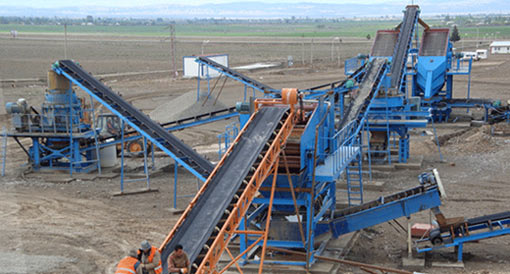
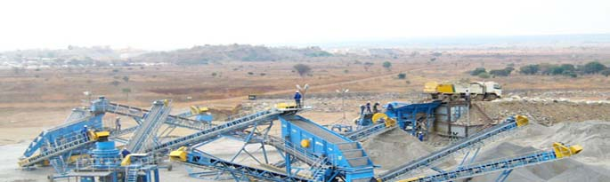

Quarry Crusher
Quarry Crusher Equipment: common varieties quarry crusher have jaw crusher,hammer crusher, impact crusher, cone crusher, ball mill, sand making machine, ultrafine grinding mill, the user can according to the hardness of the broken material, maximum feed size, and finished feed size, as well as the size of the venue and circumstances surrounding environment to select the appropriate model, configuration optimal solution.
Among the many varieties quarry crusher, jaw crusher and impact crusher, cone crusher is the most traditional crusher for crushing basalt, granite and other materials hardness is relatively large, the material sheet material disadvantage is relatively , large output, then brittle materials such as limestone, with the words, overkill, with the development of machinery industry, emerging out of the new model, the material more targeted, more broken than to better meet customer needs. Where the Shanghai World Pradesh and heavy hammer crusher hammer crusher fore.
Hammer crusher and ordinary hammer crusher also have some differences, can also be referred to as heavy impact crusher, jaw crusher both big advantage of materials, but also materials plastic crusher role than traditional crusher, new hammer crusher features the following aspects:
1, the bar design unique, it can break the moisture content below 15% of the wet material.
2, at the bottom of the liner plate adjustment, the materials in the crushing cavity to achieve hot stone, stone crushing iron 2 times better, grain shape, flake rate is greatly reduced. Can play a role in the back breaking, crushing hard rock, can be broken in two
3, the use of the back of the reinforcing rib structure, uniform stress integral shell is more durable, not easy to deformation
4, large material inlet, material can be broken in 1 meters 2, single output can reach 1600 tons
5, the use of the most advanced chromium alloy material, the service life is increased by 50%. Rotor external use of the unique structure of the wear ring, maintenance more convenient.
6, limestone, stone and other materials with compressive strength less than 200Mpa 1 heavy impact crusher can directly replace jaw crusher, impact crusher, simplified crushing process, the yield is more than or equal to the jaw crusher, impact crusher two sets of equipment for the production, maintenance more convenient.
Consist of Quarry Crusher
Quarry crusher is composed of a variety of mining machinery and equipment configuration and optimization, including a blasting equipment, feeding equipment, crushing equipment, screening equipment, sand making equipment, environmental protection equipment, belt and material transport equipment etc..
The Working Process of Quarry Crusher
Quarries broken material is not the same, the broken process is not the same, the following will be elaborated from the soft rock and hard rock:
1, the quarry crusher(crushed limestone, stone and other brittle material quarry) work process is the main: Large stone by silo by vibrating feeder evenly sent heavy counterattack coarse crusher, crushed stone by belt conveyor to the shaping machine (also called hammer crusher) for further broken; after crushing stones by belt conveyor to the vibration sieve sieve, sieve gives several different specifications of stones, meet the size the stone by the finished product belt conveyor to finished product stock pile; gravel does not meet the size requirements by belt conveyor return to heavy-duty crusher or shaping machine was broken again, forming a closed loop several times. Product size can be combined and graded according to the needs of users, the need for sand, crushed material can be broken into two rotor sand making machine, as Protect environment, dust removal equipment can be equipped with auxiliary, if the need to improve the utilization rate of stone fragmentation can be equipped with dry sand separator, separation of the powder can be widely used in food, feed, chemical industry etc..
2, the quarry crusher (broken granite, basalt and other material hardness of the quarry) work process is the main:
Large stone by silo by vibrating feeder evenly sent jaw crusher are crushed, crushed stone by belt conveyor to the shaping machine (also called hammer crusher) or crusher for further crushing; after crushing stones by belt conveyor to the vibration sieve sieve, sieve of different specifications of stones out of several, meet the requirements of the stones size by conveyor belt conveyor to finished product stock pile; gravel does not meet the size requirements by belt conveyor feed back to the jaw crusher or shaping machine was broken again, forming a closed loop several times. Product size can be combined and graded according to the needs of users, the need for sand, crushed material can then enter the dual rotor system sand machine or cone crusher crushing, as Protect environment, dust removal equipment can be equipped with auxiliary, if the need to improve the utilization rate of stone fragmentation can be equipped with dry sand separator, powder separated can be widely used in food, feed, chemical industry etc..
Request for Quotation
You can get the price list and a MCC representative will contact you within one business day.